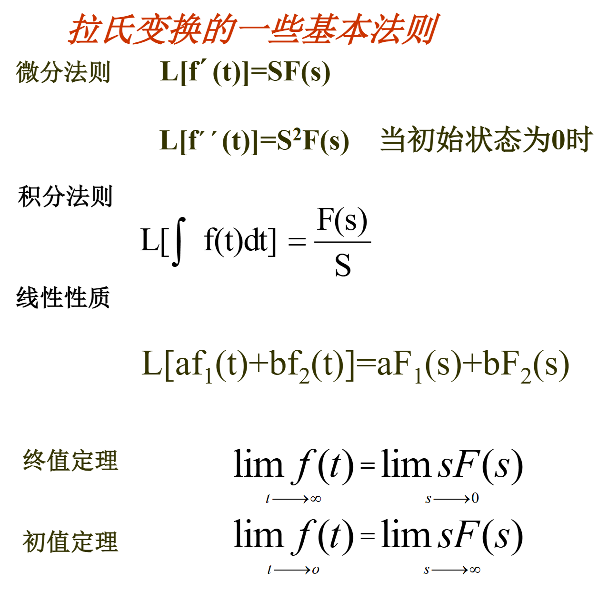
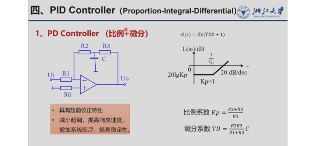
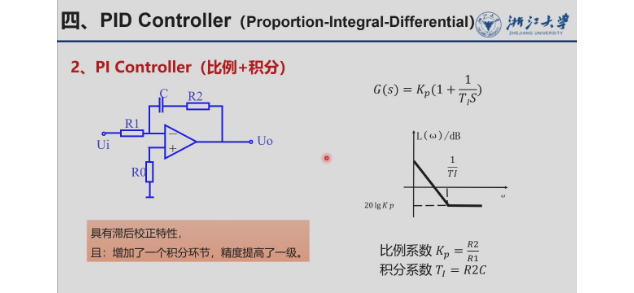
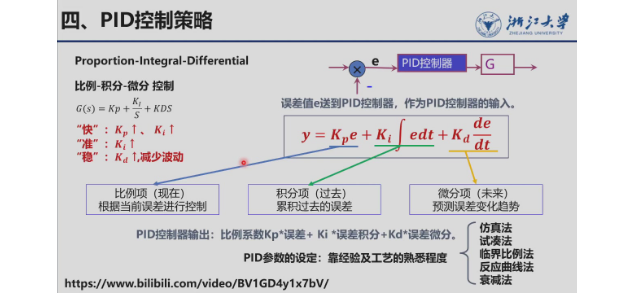

自动控制理论
专业课程，记录一些笔记
大部分内容来自老师课件
尝试使用notebookLM辅助学习
评分标准
- 课堂表现 40%
- 点名+作业 10%
- 小测 30%
- 闭卷考试 60%
1.引论
1.1控制系统基本形式
开环控制系统：输出量对系统控制作用没有影响的控制系统

闭环控制系统（Closed-Loop）：系统输出信号对控制作用有直接影响。闭环控制系统就是反馈控制系统

- 闭环特点：
- 有主通道（前向通道）和反馈通道
- 系统是采用差值进行控制的
1.2控制系统类型
- 线性系统与非线性系统
- 组成系统的元器件特性均为线性，能用线性常微分方程描述其输入输出关系的，为线性系统 （系统响应特征与初始状态无关）
- 只要有一个元器件的特性不能用线性方程来描述，即为非线性系统（死区，饱和，间隙）
- 连续系统和离散系统
- 连续：系统各部分的输入输出信号都是连续函数的模拟量
- 离散：系统的部分信号是以数字脉冲和数码形式传递的
- 随动系统和恒值系统
- 随动：给定量是在频繁或是缓慢变化的，要求输出信号以一定的准确性跟随输入量变化，即自动跟踪。（例：防空导弹系统）
- 恒值：给定量是一定的，控制任务是保证输出为一不变的常数，在外界干扰偏离这一数值时，能自动恢复到原定值，如恒温，恒压，恒速。（空调）
1.3 对控制系统的要求


四要素：
- 控制器
- 传感器/测量元件
- 被控对象
- 执行器
2.线性控制系统的数学模型
2.1微分方程
能用线性微分方程描述的系统叫线性系统。 线性微分方程的一般通式： $$ a_0 y^{(n)} + a_1 y^{(n-1)} + \dots + a_n y = b_0 x^{(m)} + b_1 x^{(m-1)} + \dots + b_m x $$ （\(y\) 是系统的输出，\(x\) 是输入）
- 写系统微分方程的一般步骤
- 确定输入量、输出量
- 按信号传递顺序，依各变量遵循的物理规律， 列出在变化过程中各个动态微分方程
- 消去中间变量
- 整理：将输出量放在左边，按降阶排列（便于确定系统复杂度）
e.g.
一阶 RC 电路
一阶 RLC 电路
2.2 传递函数
Laplace Transform
拉氏变换的基本定义：
对于一个定义在时间 \(t \ge 0\) 的函数 \(f(t)\)，它的单边拉氏变换 \(F(s)\) 在数学上定义为以下积分： \(F(s) = L[f(t)] = \int_{0}^{\infty} f(t)e^{-st} dt\) 其中，\(s\) 是一个复数变量（\(s = \sigma + i\omega\)），被称为复频率或拉氏算子。经过变换后，原本随时间 \(t\) 变化的函数，就变成了一个关于变量 \(s\) 的代数表达式
拉氏变换的数学性质：
- 线性性质：两个函数线性组合的变换，等于它们各自变换的线性组合，即 \(L[af_1(t) + bf_2(t)] = aF_1(s) + bF_2(s)\)
- 微积分的代数化：
- 对函数求一阶导数，在 \(s\) 域相当于乘以 \(s\) 并减去初始状态：\(L[f'(t)] = sF(s) - f(0)\)
- 对函数求二阶导数：\(L[f''(t)] = s^2F(s) - sf(0) - f'(0)\)
- 这点非常关键，因为它在代数运算的同时，自动把系统的“初始条件”（如初始速度、初始位置）融入到了方程中
e.g.
结合例子的直观讲解：
假设我们有一个时间函数 \(f(t) = 4t^2 - 3\cos(t) + 5e^{-t}\)，我们想求它的拉氏变换。 利用线性性质，我们可以把它拆开，直接查阅标准变换表：
1. \(t^2\) 的拉氏变换是 \(2/s^3\)，乘以4得到 \(8/s^3\)。
2. \(\cos(t)\) 的拉氏变换是 \(s/(s^2+1)\)，乘以-3得到 \(-3s/(s^2+1)\)。
3. \(e^{-t}\) 的拉氏变换是 \(1/(s+1)\)，乘以5得到 \(5/(s+1)\)。 最终的拉氏变换结果就是简单的代数和：\(F(s) = \frac{8}{s^3} - \frac{3s}{s^2+1} + \frac{5}{s+1}\)。


常用函数拉氏变换对照表
| 函数名称 | \(f(t)\) | \(F(s)\) |
|---|---|---|
| 阶跃 | \(1(t)\) | \(\frac{1}{s}\) |
| 冲击 | \(\delta(t)\) | \(1\) |
| 斜坡 | \(t\) | \(\frac{1}{s^2}\) |
| 指数 | \(e^{-at}\) | \(\frac{1}{s+a}\) |
| 加速度 | \(\frac{1}{2}t^2\) | \(\frac{1}{s^3}\) |
| 正弦 | \(A \sin \omega_0 t\) | \(\frac{A \omega_0}{s^2 + \omega_0^2}\) |
拉氏反变换
$$
f(t) = \mathcal{L}^{-1}[F(s)]
$$
example
例题： 已知象函数 \(F(s)\)，求原函数 \(f(t)\)。 $$ F(s) = \frac{s+2}{s^2 + 4s + 3} $$ 解： 利用因式分解： $$ F(s) = \frac{s+2}{(s+1)(s+3)} = \frac{0.5}{s+1} + \frac{0.5}{s+3} $$ 查表进行拉氏反变换得： $$ f(t) = 0.5e^{-t} + 0.5e^{-3t} $$
建立传递函数
定义：零初始条件下，系统输出与输入的拉氏变换之比，G(s)=C(s)/R(s)
传递函数通式，相加或相乘形式

典型传递函数

建立步骤
- 列出微分方程
- 对等式两边取拉氏变换
- 求出G(s)=C(s)/R(s)
e.g.
 其他的求解技巧：
其他的求解技巧：
电容 C 复阻抗=1/CS
电感 L 复阻抗：LS
2.3 方框图
要素：
综合点起多信号加减运算作用
分支点起引出信号作用
可以根据这两点来理解前移、后移化简
化简思路？:消除交叉连接，分支点最好只有一个，综合点运算化简
 - 各要素关系：
- 各要素关系：
- 闭环传递函数:\(\Phi(s)=\frac{C_(s)}{R_(s)}=\frac{G(s)}{1+G(s)H(s)}\)
- 单位负反馈系统：\(H(s)=1\)
- 开环传递函数：\(G(s)*H(s)\)
- 画方框图的一般步骤
- 写每一个元件的状态方程，找中间量
- 将每个元件的传递函数用方框图表示
- 将方框图连接
方框图的等效变化
还没太掌握
-
串联连接（Series）： 两个方框首尾相连，中间没有引出点或比较点
-
化简法则： 将两者的传递函数相乘
-
公式： \(G_{eq} = G_1 \cdot G_2\)

-
-
并联连接（Parallel）： 信号从同一个引出点分开，经过各自的方框后，进入同一个比较点。
-
化简法则： 将两者的传递函数相加或相减（取决于比较点上的正负号）。
-
公式： \(G_{eq} = G_1 \pm G_2\)

-
-
基本反馈回路（Feedback）： 信号经过前向通道（\(G\)），然后一部分信号被反馈通道（\(H\)）引回输入端的比较点。
-
化简法则： 使用闭环传递函数公式。
-
公式： \(G_{eq} = \frac{G}{1 \mp G \cdot H}\)

- 注：如果是最常见的负反馈（反馈回比较点是
-号），分母就是+；如果是正反馈，分母就是-。 - 综合点移动
- 后移
- 前移
- 互移
-
-
分支点移动
- 后移
- 前移
- 互移
skill
💡 总结一个小口诀：
- 串联相乘，并联相加。
- 反馈看符号，负反馈加，正反馈减。
- 节点跨越方框：顺向走除以G，逆向走乘以G。 （顺向指与信号流向相同，逆向指与信号流向相反。引出点顺移除以G，比较点逆移除以G）。
开环传递函数G(s)
梅逊公式
求解传递函数
$$
\Phi=\frac{前向通道的等效传递函数}{1\pm\Sigma每一回路的开环传递函数\pm\Sigma两两不交叉回路的开环传递函数相乘}
$$

作业题
使用两种不同方式求解传递函数


3.时域分析法
给输入，看输出随时间的变化
3.1典型响应和性能指标
典型信号
- 单位阶跃信号
- 单位斜坡信号
- 单位脉冲信号（面积为 1）
- 正弦信号


| 信号名称 (中英文) | 数学表达式 | 拉氏变换 R(s) | 工程应用场景 |
|---|---|---|---|
| 单位脉冲 (Unit Impulse) | r(t)=δ(t) | 1 | 瞬时冲击。核心见解：单位脉冲响应 g(t) 的拉氏变换即为系统的传递函数 Φ(s)。 |
| 单位阶跃 (Unit Step) | r(t)=1(t≥0) | \(1/s\) | 电源接通、指令突加。教授提醒：阶跃信号是对系统动态特性最不利（最严酷）的信号。 |
| 单位斜坡 (Unit Ramp) | r(t)=t(t≥0) | \(1/s^2\) | 指令随时间匀速增加。 |
| 正弦信号 (Sine Wave) | \(r(t)=Asin(ω_0t)\) | s2+ω02Aω0 | 交流系统或周期性扰动分析。 |
典型时间响应
- definition：零初始条件下，在典型信号作用下的输出。
-
单位阶跃响应
定义：在单位阶跃信号作用下的响应，用 \(h(t)\) 表示。- 已知：\(C(s) = \Phi(s) R(s)\)
- 输入：\(R(s) = \frac{1}{s}\)
- 输出：\(\therefore c(t) = h(t) = \mathcal{L}^{-1}\left[ \frac{\Phi(s)}{s} \right]\)
-
单位斜坡响应
定义：在单位斜坡信号作用下的响应，用 \(c(t)\) 表示。 -
已知：\(C(s) = \Phi(s) R(s)\)
- 输入：\(R(s) = \frac{1}{s^2}\)
- 输出：\(\therefore c(t) = \mathcal{L}^{-1}\left[ \frac{\Phi(s)}{s^2} \right]\)
-
单位脉冲响应
定义：在单位脉冲信号作用下的响应，用 \(g(t)\) 表示。 -
已知：\(C(s) = \Phi(s) R(s)\)
- 输入：\(R(s) = 1\)
- 传递函数关系：\(\therefore C_{\text{脉冲}}(s) = \Phi(s) = s C_{\text{阶跃}}(s)\)
- 输出：\(c(t) = g(t) = \mathcal{L}^{-1}[\Phi(s)]\)
性能指标
- 调节时间（快）：到稳定带的最小时间 \(t_s=3T\)
- 稳态误差 （准）\(e_{ss}\)
- 超调量（稳）\(M_p\)
3.2一阶系统分析
- definition：数学模型通式 \(\phi(s)=\frac{1}{1+TS}\) 调节时间 稳态误差 超调量

3.3二阶系统
- definition 二阶系统的闭环传递函数标准形式为： $$ \frac{C(s)}{R(s)} = \Phi(s) = \frac{\omega_n^2}{s^2 + 2\zeta\omega_n s + \omega_n^2} $$
参数说明：
- \(\omega_n\) —— 无阻尼自然振荡频率 (Natural Frequency)
- \(\zeta\) —— 阻尼比 (Damping Ratio)
特征方程 ： \(s^2 + 2\zeta\omega_n s + \omega_n^2\)
特征根 ：
$$
s_{1,2} = -\zeta\omega_n \pm \omega_n\sqrt{\zeta^2 - 1}
$$
分类：
1. \(\zeta>1\) 过阻尼
2. \(\zeta=1\) 临界阻尼
3. \(\zeta<1\) 欠阻尼
二阶系统单位阶跃响应
- 过阻尼

- 超调量 \(M_P=0\)
- 稳态误差 \(e_{ss}=0\)
- 调节时间 \(t_s=\frac{4.5\zeta}{\omega_n}\)
- 临界阻尼

- 超调量 \(M_P=0\)
- 稳态误差 \(e_{ss}=0\)
- 调节时间 \(t_s=\frac{4.73}{\omega_n}\)
-
欠阻尼
 二阶系统特征方程的根为：
$$
s_{1,2} = -\sigma \pm j\omega_d \quad (\text{共轭复根})
$$
其中：
二阶系统特征方程的根为：
$$
s_{1,2} = -\sigma \pm j\omega_d \quad (\text{共轭复根})
$$
其中：- \(\omega_d = \omega_n\sqrt{1 - \zeta^2}\) —— 有阻尼振荡频率
- \(\sigma = \zeta\omega_n\) —— 衰减系
超调量


调节时间


极值点，调节时间最快：\(\zeta=0.707\) (最佳阻尼比) \(t_S=3/\omega_n\)
note
整理为一张表格
- 二阶单位阶跃响应
- 过阻尼 \(t_s=\frac{4.5\zeta}{\omega_n}\)
- 临界阻尼 \(t_s=\frac{4.73}{\omega_n}\)
- 欠阻尼
3.4 高阶系统的估算
主导极点
偶极子

3.5 稳定性分析
暂态分量决定稳定性，趋于 0 稳定


!!！note "结论" 1.特征方程所有实根为负→稳定 2.特征方程有实根为正→不稳定 3.特征方程有实根为 0→不稳定（临界）
代数判据
劳斯判据 （必考）
特征方程变成特征多项式
先看有无缺项，缺项不稳定
稳定的充要条件：
- 不缺项，且每项系数>0
- 劳斯表第一列>0

 通式：
$$
b_n=\frac{a_1a_{2n}-a_0a_{2n+1}}{a_1}
$$
$$
c_n=\frac{b_1a_{2n+1}-a_1b_{n+1}}{b_1}
$$
通式：
$$
b_n=\frac{a_1a_{2n}-a_0a_{2n+1}}{a_1}
$$
$$
c_n=\frac{b_1a_{2n+1}-a_1b_{n+1}}{b_1}
$$
稳定域求解步骤
- 将特征方程化为特征多项式
- 根据劳斯判据充要条件，每项系数>0
- 根据劳斯表，第一列系数>0
- 总结得到稳定域
稳定裕量
把 s-a 代进去求
3.6 稳定误差分析
误差传递函数： $$ \phi_{er}=\frac{1}{1+GH} $$ 型别（看开环传递函数）： 看分母提出几个 S 就为几型系统
位置误差系数

作业&答案

4.根轨迹法
4.1根轨迹与方程
根轨迹
定义：放大倍数 K 从 0 到无穷变化时，闭环特征根在复平面中的走向，利用画出的根轨迹可分析系统动态特性变化
根轨迹方程：


4.2 画根轨迹
基本法则
1. n 阶系统有 n 条根轨迹
2. 根轨迹是连续的，对称于实轴
3. 根轨迹起始于开环极点，终止于开环零点及无穷远
4. 实轴上存在根轨迹条件：
5. 渐近线方程：

 6. 分离点 d
6. 分离点 d
利用以下公式计算
 7. 起始角和终止角
7. 起始角和终止角
 8. 虚轴交点
8. 虚轴交点

 9. 根之和
9. 根之和
4.3 闭环零、极点的分布与系统阶跃响应的关系
- 稳定性：轨迹在 s 平面左边
- 快速性
- 平稳性
4.4 系统阶跃响应的根轨迹分析
5.频域分析法
频率特性概念


幅频特性与相频特性
图形表示
极坐标图
没咋用到
对数幅频特性

对数相频特性
典型环节

比例环节

惯性环节 （一阶滞后）
最小相位系统：\(\frac{1}{TS+1}\)
频域上：

这里注意一下相频特性部分角度变化
幅频变化为每十倍频程-20db
转折频率为：\(\omega=1/T\)

伯德图：

一阶超前
通式： \(TS+1\)
一阶超前和一阶滞后在传递函数上看： 零点贡献+20 db 极点-20 db

积分微分
积分：\(1/S\)
微分：\(S\)
特点：过（1，0）
相频：积分-90°，微分 90°

系统开环频率特性
开环的对数幅频、相频特性


绘制伯德图
e.g.
标准化
转折频率

伯德图绘制流程

伯德图推导传递函数
think：沿着横坐标走看频率内使得幅值上升或下降的函数++

 剪切频率 → 幅频特性=0
剪切频率 → 幅频特性=0
homework
步骤：标准化、环节、分别画图


伯德图学习视频
开环极坐标图
Nyquist稳定判据
时域分析→劳斯判据 频率法→奈氏稳定判据
看开环传递函数


裕度

在伯德图中的判断：


相角裕度γ
相角裕度表示：当系统的开环幅值衰减（或放大）恰好为 1 倍时，系统的相位距离导致不稳定的 −180°还有多少角度的裕量。
计算步骤：
- 求剪切频率 \(\omega_c\) :令开环频率特性的幅值 ∣G(jωc)∣=1（或者在 Bode 图上对应的对数幅值 L(ωc)=20 lg∣G(jωc)∣=0 dB），解方程求出这时的频率 ωc。
- 计算该频率下的相角φ(ωc)。 将 ωc 代入系统的相频特性公式，求出 φ(ωc)。
- 套用公式计算相角裕度： γ=180°+φ(ωc)
相频特性因子表格：
| 因子 | 代入 ( \(s=j\omega\) ) | 相角 |
|---|---|---|
| \(K>0)\) | \(K\) | \(0^\circ\) |
| \(K<0\) | \(K\) | \(180^\circ\) |
| \(s\) | \(j\omega\) | \(90^\circ\) |
| \(s^2\) | \((j\omega)^2\) | \(180^\circ\) |
| \(s+a\) | \(a+j\omega\) | \(\arctan(\omega/a)\) |
| \(1+Ts\) | \(1+jT\omega\) | \(\arctan(T\omega)\) |
| \(\frac{1}{s+a}\) | \(\frac{1}{a+j\omega}\) | \(-\arctan(\omega/a)\) |
| \(\frac{1}{s}\) | \(\frac{1}{j\omega}\) | \(-90^\circ\) |
| \(\frac{1}{s^2}\) | \(\frac{1}{(j\omega)^2}\) | \(-180^\circ\) |
增益裕度 \(L_{Kg}\)
比较难求
增益裕度表示：当系统的相角正好滞后达到 −180∘°时，系统的开环幅值距离达到 1（即 0 dB）还有多少倍数的衰减空间。
- 第一步：求相位穿越频率ωg。 令开环相频特性 φ(ωg)=−180∘（即 −π），解方程求出这时的频率 ωg。
- 第二步：计算系统在该频率下的开环幅值 ∣G(jωg)∣。 将 ωg 代入系统的幅频特性公式，求出对应的幅值大小。
- 第三步：套用公式计算增益裕度： 如果用对数（分贝 dB）表示：Lkg=−20 lg∣G(jωg)∣。 如果用线性倍数表示：\(Kg=\frac{1}{∣G(jωg)∣}\)
稳定的要求 增益裕度>6 db 相位裕度在 30~60 之内
例题：


开环频率特性与系统阶跃响应
三频段法： 低频 中频 高频
复习
6.控制系统的矫正
串联校正
1.超前校正


2.滞后校正


3.超前-滞后校正
4. PID
- PD 控制

- PI 控制

- PID 控制

卡尔曼滤波
反馈校正
例题


homework

6-5-1 例题